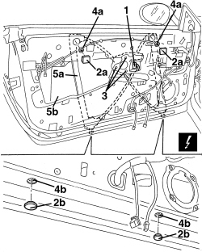
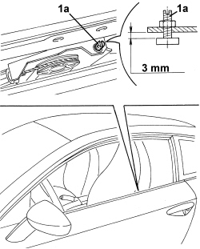

7005M26 ELECTRIC WINDOW MECHANISM FOR ONE FRONT DOOR LH OR RH - R.R
- Path
- Procedures > 70 FITTINGS > 7005 PASSENGER COMPARTMENT FRONT SIDE DOORS > 7005M FRONT ELECTRIC WINDOWS > 7005M26 ELECTRIC WINDOW MECHANISM FOR ONE FRONT DOOR LH OR RH - R.R
- Kind
- repair procedure (removal / refitting; the operation number is the code)
- Applies to
- all engines; all production periods
- Interactive page
- https://sloeber94.github.io/elrnDB-aBrrSpdr/en/#/946002529
Applies to: all engines; all production periods
 Removing
Removing
 Refitting
RefittingOp. 7005E38 FRONT SIDE DOOR INTERIOR HANDLE- R.R.
Op. 7005M14 SWITCH UNIT ON DRIVER'S FRONT DOOR - R.R.
Or, alternatively.
Op. 7005M12 PASSENGER SIDE FRONT DOOR ELECTRICALLY OPERATED WINDOW SWITCH - R.R.
Op. 7040E24 LOWER COURTESY LIGHT IN DOOR PANEL - R+R
Op. 7005E12 CORNER COVER FOR ONE FRONT SIDE DOOR, LH OR RH - R.R.
Op. 7005E11 LH OR RH FRONT DOOR INNER PANEL - R+R WITH FOULING PARTS REMOVED
Op. 7005A04 FRONT SIDE DOOR WATER GUARD PROTECTION - R.R. OR POSITION WITH DOOR PANEL REMOVED
Op. 5570T90 FRONT SPEAKER (ONE), LEFT OR RIGHT - R.R
1. Detach the electrical connection.
Description | Component |
|---|---|
LEFT FRONT ELECTRIC WINDOW MOTOR | |
RIGHT FRONT ELECTRIC WINDOW MOTOR |
2. Remove adhesive protections (2a) and covers (2b) from the access holes to the fastenings.
3. Undo the window motor fixing bolts.
4. Undo the nuts (4a) and loosen the bolts (4b).
5. Remove the window mechanism (5a) by passing it through the opening (5b).

Applies to: all engines; all production periods
Refitting
Removing- Check that the electric window motor is not damaged.
1. Check that the mechanical end of travel distance (1a) for the window is 3 mm, otherwise restore it.

Applies to: all engines; all production periods
- Check that the electric window motor is not damaged.
- Position the window mechanism, screw in the nuts and bolts and tighten provisionally.
- Apply the adhesive protections and covers to the fastening access holes.
- Attach the electrical connection.
Op. 7005M25 FRONT SIDE DOOR ELECTRICALLY OPERATED WINDOW MECHANISM - CHECK POSITION AND FASTENING
Op. 5570T90 FRONT SPEAKER (ONE), LEFT OR RIGHT - R.R
Op. 7005A04 FRONT SIDE DOOR WATER GUARD PROTECTION - R.R. OR POSITION WITH DOOR PANEL REMOVED
Op. 7005E11 LH OR RH FRONT DOOR INNER PANEL - R+R WITH FOULING PARTS REMOVED
Op. 7005E12 CORNER COVER FOR ONE FRONT SIDE DOOR, LH OR RH - R.R.
Op. 7040E24 LOWER COURTESY LIGHT IN DOOR PANEL - R+R
Op. 7005M12 PASSENGER SIDE FRONT DOOR ELECTRICALLY OPERATED WINDOW SWITCH - R.R.
Topics linked from this page (12)
- 5570T90 FRONT SPEAKER (ONE), LEFT OR RIGHT - R.R
- 7005A04 FRONT SIDE DOOR WATER GUARD PROTECTION - R.R. OR POSITION WITH DOOR PANEL REMOVED
- 7005D14 FRONT SIDE DOOR DESCENDING WINDOW GLASS - R.R. WITH DOOR PANEL (AND SUPPORT FRAME) REMOVED
- 7005E11 LH OR RH FRONT DOOR INNER PANEL - R+R WITH FOULING PARTS REMOVED
- 7005E12 CORNER COVER FOR ONE FRONT SIDE DOOR, LH OR RH - R.R.
- 7005E38 FRONT SIDE DOOR INTERIOR HANDLE- R.R.
- 7005M12 PASSENGER SIDE FRONT DOOR ELECTRICALLY OPERATED WINDOW SWITCH - R.R.
- 7005M14 SWITCH UNIT ON DRIVER'S FRONT DOOR - R.R.
- 7005M25 FRONT SIDE DOOR ELECTRICALLY OPERATED WINDOW MECHANISM - CHECK POSITION AND FASTENING
- 7040E24 LOWER COURTESY LIGHT IN DOOR PANEL - R+R
- N060 DRIVER'S FRONT ELECTRIC WINDOW MOTOR
- N061 RIGHT FRONT ELECTRIC WINDOW MOTOR
Topics that link to this page (7)
- M003 ONE OF THE ELECTRIC FRONT WINDOWS IS NOT WORKING
- 5505B10 FRONT DOOR WIRING (ONE), LEFT OR RIGHT - R.R. WITH WATER GUARD OR FRAME DETACHED
- 7005M29 FRONT SIDE DOOR ELECTRICALLY OPERATED WINDOW MOTOR, LEFT OR RIGHT - R.R
- E3050 FRONT ELECTRIC WINDOWS - WIRING DIAGRAM
- E3050 FRONT ELECTRIC WINDOWS - COMPONENT LOCATION
- E3050 FRONT ELECTRIC WINDOWS - WIRING DIAGRAM
- E3050 FRONT ELECTRIC WINDOWS - COMPONENT LOCATION